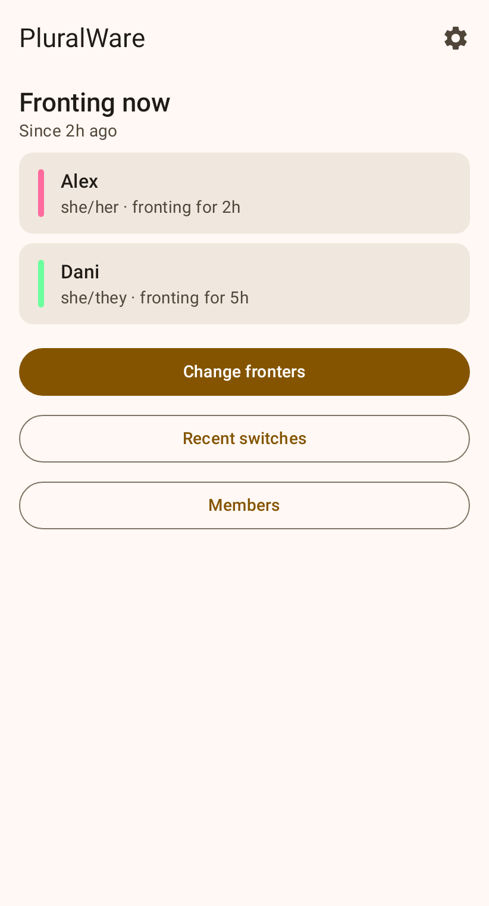
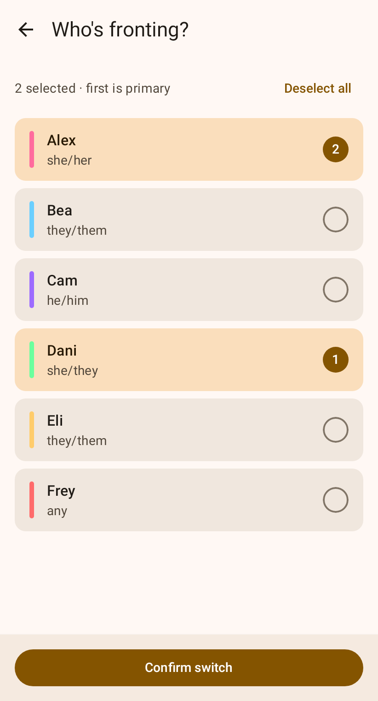
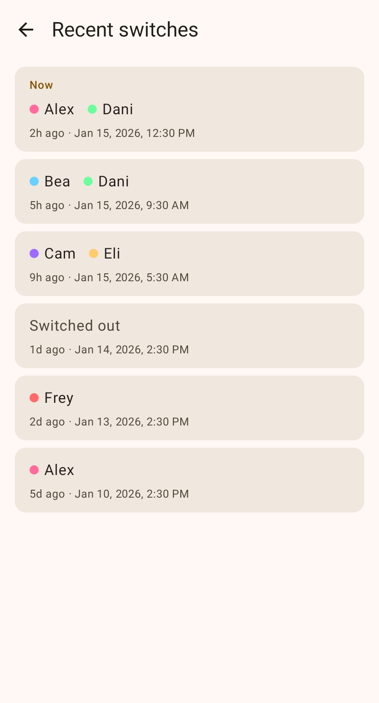
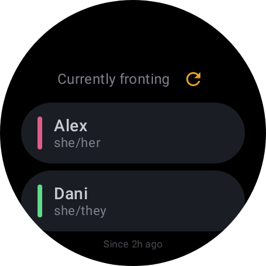
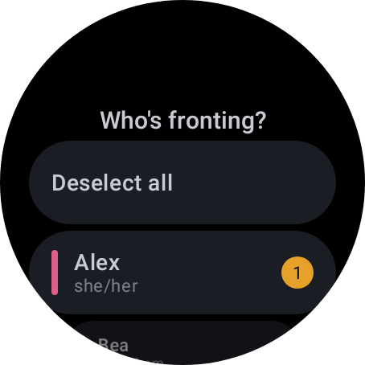

PluralWare
See and set who's fronting from your phone or your wrist. An Android and Wear OS app for PluralKit systems. The watch is optional: the phone app does everything on its own.





What it does
- See who's fronting and for how long, and switch: one or more members, or switch out.
- Browse recent switches, and fix one by changing its time or members, or deleting it.
- Manage your system: members' names, pronouns, colors, birthdays, proxy tags, privacy and more.
- On the watch: a complication for your watch face and a tile.
- On the phone: a home-screen widget.
- Let friends know when you switch, with private (end-to-end encrypted) notifications, ntfy, or posts to a Discord channel. You choose which members may be named.
- Follow friends' systems and get notified when they switch.
Get it
PluralWare is free and open source (AGPL-3.0), and early: it's being tested with plural folks now. Each release has a phone app and a watch app; the install guide covers both, including keeping the phone app up to date with Obtainium.
Google Play is coming, starting with testers. It will install and update the watch app for you.
More
- Privacy policy
- Source code
- Setting up a relay, so friends hear about switches made in Discord too
- Bug reports and ideas